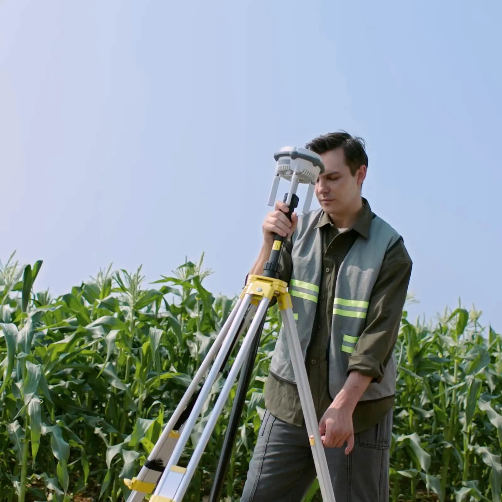

02 / Позиционирование
Смена парадигмы: от «работы на глазок»
к тотальному контролю
Традиционный подход

!Перерасход химии и семян из-за перекрытий — до 15%.
!Потери урожая из-за огрехов и недосева.
!Человеческий фактор и усталость механизатора.
Экосистема Smart Farming

✓Исключение слепых зон: точность прохода линия в линию.
✓Оптимизация ТМЦ: экономия до 20% на ресурсах.
✓Автономность 24/7: работа в условиях нулевой видимости.
02 / 07
Photo: dji.com